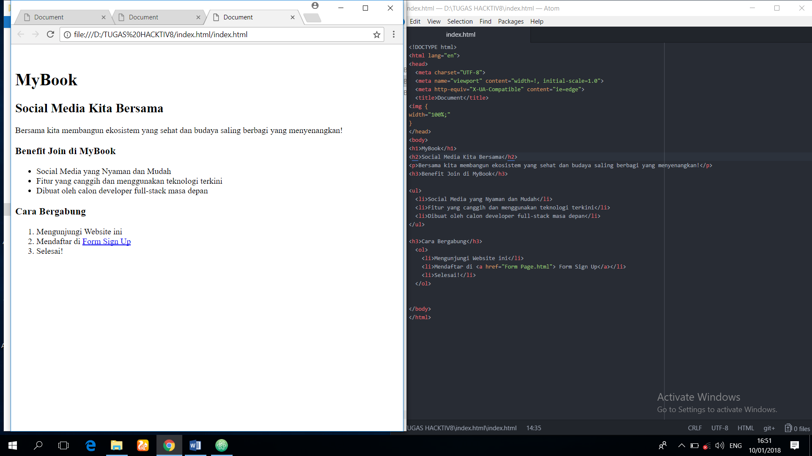

RINGKASAN TERKAIT HTML, CSS, MARKDOWN, DAN GITHUB
Oke langsung saja pada topik pembahasan kita yaitu HTML, CSS, MARKDOWN, DAN GITHUB saya akan mencoba menjelaskannya secara ringkas dan akan saya coba sertakan dengan gambar dan beberapa referensi terkait pembahasan kita tersebut.
1. HTML (Hyper Text Markup Language)
Elemen Dasar dengan Tag dan Atribut (Tags dan Attributes)
Dokumen atau konten HTML dalam sebuah halaman web dideskripsikan dengan elemen HTML atau tag seperti head, title, body, article, section, p, div, span, img, picture, dan banyak lainnya. Elemen-elemen ini membentuk bagian pembangun (building blocks) sebuah website. Website dapat memiliki sedikit atau banyak dari elemen-elemen tersebut dan dari beberapa teks terdapat di antara tag pembuka dan penutup.
Berikut adalah screenshot dari index html berikut hasilnya jika dibuka dengan browser
pelajari selengkapnya tentang HTML di www.github.com
CSS (Cascading Style Sheet)
CSS secara harfiah berarti Lembar Penggayaan yang Mengalir ke Bawah. Oke, ternyata jika diterjemahkan malah membingungkan, mari hanya pedulikan bahasa Inggrisnya. CSS merupakan bahasa style sheet yang berguna untuk membantu menyajikan dokumen yang ditulis dengan HTML maupun XML bahkan SVG. CSS mengatur bagaimana elemen-elemen seharusnya ditampilkan di layar, di kertas, dan berbagai media lainnya. Hal-hal seperti warna, ukuran, posisi, dll (color, size, position, etc) dapat diatur oleh CSS. Tentu saja berarti CSS membutuhkan HTML agar dapat bekerja. Saat ini versi terbarunya adalah versi 3, secara resmi disebut CSS3.
Sintaks atau cara penulisan CSS biasanya terlihat seperti ini:
Menyertakan CSS untuk HTML
Ada 4 metode utama untuk menyertakan CSS agar dapat mengubah layout HTML disini saya akan menjelaskan salah satunya yang mudah kita gunakan.
Link ke file CSS terpisah. Dengan cara menaruh meta data berikut di head HTML.
Contoh link CSS

Berikut adalah contoh sebelum dan sesudah menggunakan CSS pada HTML
contoh HTML tanpa CSS
contoh HTML dengan CSS
pelajari lebih lanjut tentang CSS di www.github.com
MARKDOWN
Markdown adalah sebuah cara untuk menulis konten untuk web yang menggunakan file .md atau .markdown.
CONTOH
| CODE | NAMA CODE | CONTOH | HASIL |
|---|---|---|---|
| # | heading | #CONTOH# | CONTOH |
| ** | bold | *CONTOH* | CONTOH |
| **_ | bold dan italic | **_CONTOH_** | CONTOH |
pelajari selanjutnya tentang MARKDOWN di www.github.com
GIT dan GITHUB
Git merupakan tool utama yang pasti akan kamu gunakan setiap hari, sepanjang karirmu sebagai developer. Dengan ini kamu dapat tahu apa saja yang kamu lakukan setiap saat dan berkolaborasi dengan rekan lainnya juga. Anggaplah Git sebagai mesin waktu untuk berbagai kerjaan dan file/folder yang kamu kelola.
Sedangkan GitHub merupakan tempat sekaligus komunitas untuk para developer berbagai code dan berkolaborasi dalam berbagai project software. Bahkan modern ini, profil GitHub dapat menggantikan resume/CV untuk melamar pekerjaan!
Sebelum melangkah lebih jauh, terlebih dahulu kita download aplikasi Git di http://git-scm.com/downloads. Sesuaikan dengan system operasi yang digunakan.
Pelajari cara mensinkronkan Git dengan Github di www.github.com
Pelajari lebih lanjut tentang Git di www.github.com